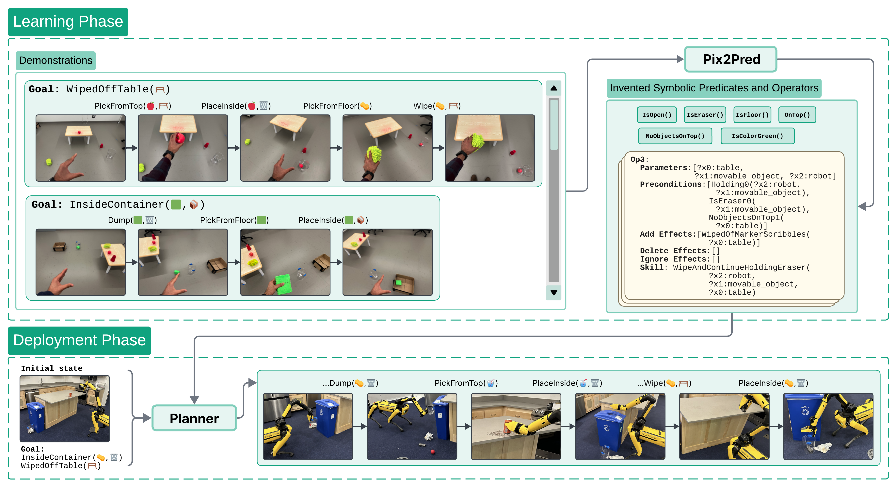
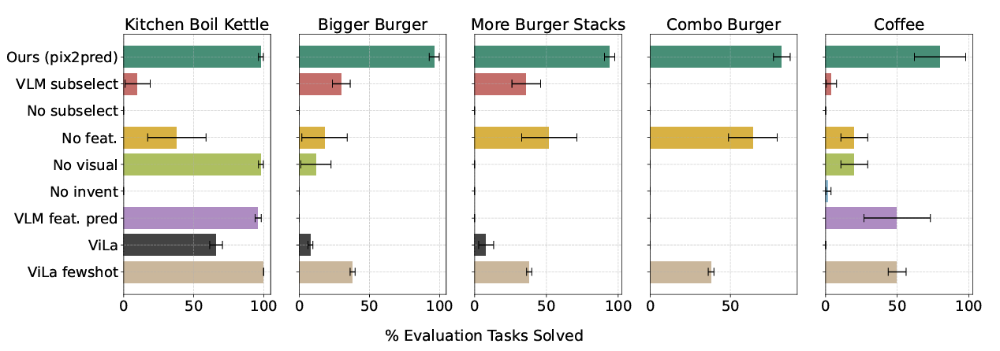

From Pixels to Predicates:
Learning Symbolic World Models via Pretrained Vision-Language Models
Abstract
Our aim is to learn to solve long-horizon decision-making problems in complex robotics domains given low-level skills and a handful of short-horizon demonstrations containing sequences of images. To this end, we focus on learning abstract symbolic world models that facilitate zero-shot generalization to novel goals via planning. A critical component of such models is the set of symbolic predicates that define properties of and relationships between objects. In this work, we leverage pretrained vision-language models (VLMs) to propose a large set of visual predicates potentially relevant for decision-making, and to evaluate those predicates directly from camera images. At training time, we pass the proposed predicates and demonstrations into an optimization-based model-learning algorithm to obtain an abstract symbolic world model that is defined in terms of a compact subset of the proposed predicates. At test time, given a novel goal in a novel setting, we use the VLM to construct a symbolic description of the current world state, and then use a search-based planning algorithm to find a sequence of low-level skills that achieves the goal. We demonstrate empirically across experiments in both simulation and the real world that our method can generalize aggressively, applying its learned world model to solve problems with a wide variety of object types, arrangements, numbers of objects, and visual backgrounds, as well as novel goals and much longer horizons than those seen at training time.
Method
pix2pred Overview. Given a set of demonstrations - potentially from a different embodiment - showcasing the effects of distinct skills (e.g., wiping, dumping) and a small initial predicate set, pix2pred invents new predicates (e.g., NoObjectsOnTop(?table)) and learns symbolic operators. At test time, it plans over these to solve a novel multi-step task in a visually distinct environment (e.g., retrieving an eraser from a bin, clearing an obstacle, wiping the table, and returning the eraser).
Results
 Across a variety of tasks in simulated environments, ranging from 2D gridworld tasks to full 3D simulation of a coffee-making task, we find that pix2pred learns predicates and operators that enable it to generalize to novel situations never seen at training time. For instance, in the simple burger-making environment, our approach is able to learn predicates corresponding to whether or not a patty is cooked, and whether or not lettuce is chopped from just 10 demonstrations of individually making burgers with just lettuce, just cheese, or just a patty. Using these learned predicates and corresponding learned operators, it is able to generalize zero-shot to making burgers with a combination of all these ingredients.
Importantly, we find that pix2pred generalizes substantially better than a 'model-free' approach that simply prompts a VLM to plan directly to solve test-tasks using the demonstrations as in-context examples (ViLA fewshot). We observe that the VLM by itself tends to 'pattern match' from the demonstrations. For instance it is unable to solve testing tasks in the burger domain where the agent starts out holding an object that must be put down first (since the agent's hands are full!). This is because none of the demonstrations start out with the agent holding any objects and thus the VLM has never seen such a situation before. By contrast, our approach learns a 'HandEmpty()' predicate and leverages this to find the correct plan. This suggests that learning a world model and then planning with it can enable much better generalization, from extremely small amounts of data, compared to a pure model-free approach.
Learning from Real-World Data
Cleanup
pix2pred learns to solve a cleanup task from just 6 real-world egocentric human demonstrations. It is then able to solve never-before-seen variants of this task (such as where it must obtain an eraser by first dumping it out of a bucket!) in novel settings with entirely differnet objects and visual backgrounds.
Learned predicates and learned action models in Cleanup (click me!)
Learned predicates:
IsOnFloor0
IsEraser0
Holding0
NoObjectsOnTop1
IsOn0
HandEmpty0
Learned operators:
STRIPS-Op0:
Parameters: [?x0:movable_object, ?x1:table, ?x2:robot]
Preconditions: [HandEmpty0(?x2:robot), IsOn0(?x0:movable_object, ?x1:table)]
Add Effects: [Holding0(?x2:robot, ?x0:movable_object), NoObjectsOnTop1(?x1:table)]
Delete Effects: [HandEmpty0(?x2:robot), IsOn0(?x0:movable_object, ?x1:table)]
Ignore Effects: []
Skill: PickFromTop(?x2:robot, ?x0:movable_object, ?x1:table)
STRIPS-Op1:
Parameters: [?x0:movable_object, ?x1:robot, ?x2:trash_can]
Preconditions: [Holding0(?x1:robot, ?x0:movable_object)]
Add Effects: [HandEmpty0(?x1:robot), InsideContainer(?x0:movable_object, ?x2:trash_can)]
Delete Effects: [Holding0(?x1:robot, ?x0:movable_object)]
Ignore Effects: []
Skill: PlaceInside(?x1:robot, ?x0:movable_object, ?x2:trash_can)
STRIPS-Op2:
Parameters: [?x0:movable_object, ?x1:robot]
Preconditions: [HandEmpty0(?x1:robot), IsOnFloor0(?x0:movable_object)]
Add Effects: [Holding0(?x1:robot, ?x0:movable_object)]
Delete Effects: [HandEmpty0(?x1:robot), IsOnFloor0(?x0:movable_object)]
Ignore Effects: []
Skill: PickFromFloor(?x1:robot, ?x0:movable_object)
STRIPS-Op3:
Parameters: [?x0:table, ?x1:movable_object, ?x2:robot]
Preconditions: [Holding0(?x2:robot, ?x1:movable_object), IsEraser0(?x1:movable_object), NoObjectsOnTop1(?x0:table)]
Add Effects: [WipedOfMarkerScribbles(?x0:table)]
Delete Effects: []
Ignore Effects: []
Skill: WipeAndContinueHoldingEraser(?x2:robot, ?x1:movable_object, ?x0:table)
STRIPS-Op7:
Parameters: [?x0:movable_object, ?x1:robot, ?x2:trash_can]
Preconditions: [HandEmpty0(?x1:robot), InsideContainer(?x0:movable_object, ?x2:trash_can)]
Add Effects: [IsOnFloor0(?x0:movable_object)]
Delete Effects: [InsideContainer(?x0:movable_object, ?x2:trash_can)]
Ignore Effects: []
Skill: DumpContentsOntoFloor(?x1:robot, ?x2:trash_can)
pix2pred is able to achieve the goal of wiping the table, but with different objects in the same room as the egocentric human demonstrations.
pix2pred achieves the goal of wiping the table and putting the eraser back into the clear plastic bin in a completely new room that the agent has no demonstrations from.
The learned predicates and operators enable pix2pred to recover from adversarial interventions that occur at runtime.
Juice
pix2pred learns to operate a cold-press juicer from 10 real-world egocentric human demonstrations! Similar to in the Cleanup environment, it is able to perform novel variants of the task in completely new surroundings.
Learned predicates and learned action models in Juice (click me!)
Learned predicates:
IsCup0
NearJuiceValve0
InsideWasteValveRegion0
HoldingContainer0
OutsideJuiceMachine0
LidClosed0
HoldingObj0
Functional0
JuiceMachineOpen0
IsPlastic0
HandEmpty0
HasContents0
Learned operators:
STRIPS-Op0:
Parameters: [?x0:robot, ?x1:juicer]
Preconditions: [Functional0(?x1:juicer), HandEmpty0(?x0:robot), JuiceMachineOpen0(?x1:juicer)]
Add Effects: [LidClosed0(?x1:juicer)]
Delete Effects: [JuiceMachineOpen0(?x1:juicer)]
Ignore Effects: []
Skill: CloseLid(?x0:robot, ?x1:juicer)
STRIPS-Op1:
Parameters: [?x0:robot, ?x1:container]
Preconditions: [HandEmpty0(?x0:robot), IsCup0(?x1:container)]
Add Effects: [HoldingContainer0(?x0:robot, ?x1:container)]
Delete Effects: [HandEmpty0(?x0:robot)]
Ignore Effects: []
Skill: PickContainer(?x0:robot, ?x1:container)
STRIPS-Op2:
Parameters: [?x0:robot, ?x1:juicer, ?x2:container]
Preconditions: [Empty(?x2:container), Functional0(?x1:juicer), HoldingContainer0(?x0:robot, ?x2:container), IsCup0(?x2:container), LidClosed0(?x1:juicer)]
Add Effects: [HandEmpty0(?x0:robot), NearJuiceValve0(?x2:container, ?x1:juicer)]
Delete Effects: [HoldingContainer0(?x0:robot, ?x2:container)]
Ignore Effects: []
Skill: PlaceInsideJuiceValveRegion(?x0:robot, ?x2:container, ?x1:juicer)
STRIPS-Op5:
Parameters: [?x0:robot, ?x1:juicer, ?x2:container]
Preconditions: [Empty(?x2:container), Functional0(?x1:juicer), HoldingContainer0(?x0:robot, ?x2:container), IsCup0(?x2:container), IsPlastic0(?x2:container)]
Add Effects: [HandEmpty0(?x0:robot), InsideWasteValveRegion0(?x2:container, ?x1:juicer)]
Delete Effects: [HoldingContainer0(?x0:robot, ?x2:container)]
Ignore Effects: []
Skill: PlaceInsideWasteValveRegion(?x0:robot, ?x2:container, ?x1:juicer)
STRIPS-Op7:
Parameters: [?x0:container, ?x1:container, ?x2:robot]
Preconditions: [Empty(?x0:container), HasContents0(?x1:container), HoldingContainer0(?x2:robot, ?x1:container), IsCup0(?x1:container), IsPlastic0(?x1:container)]
Add Effects: [Empty(?x1:container), HasContents0(?x0:container)]
Delete Effects: [Empty(?x0:container), HasContents0(?x1:container)]
Ignore Effects: []
Skill: DumpFromOneIntoOther(?x2:robot, ?x1:container, ?x0:container)
STRIPS-Op10:
Parameters: [?x0:container, ?x1:container, ?x2:robot, ?x3:juicer, ?x4:movable_object]
Preconditions: [Empty(?x0:container), Empty(?x1:container), Functional0(?x3:juicer), HandEmpty0(?x2:robot), Inside(?x4:movable_object, ?x3:juicer), InsideWasteValveRegion0(?x1:container, ?x3:juicer), IsCup0(?x0:container), IsCup0(?x1:container), IsPlastic0(?x1:container), LidClosed0(?x3:juicer), NearJuiceValve0(?x0:container, ?x3:juicer)]
Add Effects: [HasContents0(?x0:container), HasContents0(?x1:container), JuiceInCup(?x4:movable_object, ?x0:container), OutsideJuiceMachine0(?x4:movable_object)]
Delete Effects: [Empty(?x0:container), Empty(?x1:container), Inside(?x4:movable_object, ?x3:juicer)]
Ignore Effects: []
Skill: TurnOnAndRunMachine(?x2:robot, ?x3:juicer, ?x0:container, ?x1:container)
STRIPS-Op11:
Parameters: [?x0:robot, ?x1:movable_object]
Preconditions: [HandEmpty0(?x0:robot), OutsideJuiceMachine0(?x1:movable_object)]
Add Effects: [HoldingObj0(?x0:robot, ?x1:movable_object)]
Delete Effects: [HandEmpty0(?x0:robot)]
Ignore Effects: []
Skill: PickMovable(?x0:robot, ?x1:movable_object)
STRIPS-Op12:
Parameters: [?x0:robot, ?x1:juicer, ?x2:movable_object]
Preconditions: [HoldingObj0(?x0:robot, ?x2:movable_object), JuiceMachineOpen0(?x1:juicer), OutsideJuiceMachine0(?x2:movable_object)]
Add Effects: [HandEmpty0(?x0:robot), Inside(?x2:movable_object, ?x1:juicer)]
Delete Effects: [HoldingObj0(?x0:robot, ?x2:movable_object), OutsideJuiceMachine0(?x2:movable_object)]
Ignore Effects: []
Skill: PlaceInside(?x0:robot, ?x2:movable_object, ?x1:juicer)
pix2pred achieves the goal of making orange juice in the same room as the demonstrations.
pix2pred achieves the goal of making juice using a never-before-seen fruit (a pear) in a previously unseen kitchen.
Citation
@misc{athalye2025pixelspredicateslearningsymbolic,
title={From Pixels to Predicates: Learning Symbolic World Models via Pretrained Vision-Language Models},
author={Ashay Athalye and Nishanth Kumar and Tom Silver and Yichao Liang and Jiuguang Wang and Tomás Lozano-Pérez and Leslie Pack Kaelbling},
year={2025},
eprint={2501.00296},
archivePrefix={arXiv},
primaryClass={cs.RO},
url={https://arxiv.org/abs/2501.00296}}
Updated June 2025